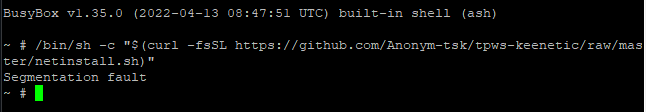
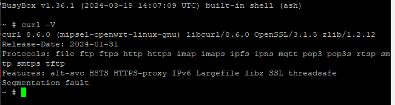
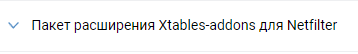
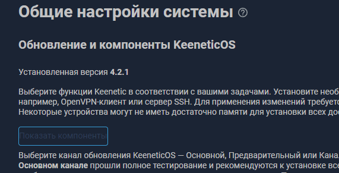
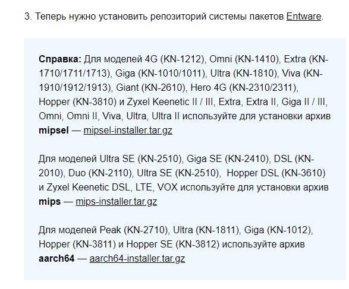

Обсуждение Обход замедления YouTube и блокировок на прошивке Keenetic с помощью nfqws / tpws (zapret)
Спасибо за причесывание и улучшение! Но по непонятной причине не работает ни ваше решение, ни из оригинала Чиним замедление YouTube на уровне роутера / Хабр
S51tpws start успешно отрабатывает и висит в процессах, но скорость ютуба никак не улучшается…
$ curl --connect-to ::speedtest.selectel.ru https://manifest.googlevideo.com/100MB -k -o/dev/null
показывает практически 0
Можете подсказать куда и как копать?
Я так понимаю надо искать свои параметры, которые меняются в зависимости от провайдера. У меня к слову тоже не работает. Автору спасибо, ждем улучшений
Это вопросы к автору исходного поста.
Попробуйте строку, начинающуюся с ARGS=, привести к виду
ARGS="--daemon --bind-addr 192.168.1.1 --port 999 --dpi-desync=split2 --tlsrec=sni --pidfile $PIDFILE"
Разумеется, сперва стоит остановить TPWS
/opt/etc/init.d/S51tpws stop
И не забыть его запустить после изменений
/opt/usr/bin/tpws: unrecognized option: dpi-desync=split2
Значит, у TPWS и NFQWS разные опции…
Тогда только подбирать.
проверял на windows-chrome, если выключить в chrome quic, то все работает отлично
У меня Пикабу отваливается после старта TPWS. Может, из-за QUIC как раз (я его не отключал).
Реализовано ограничение по домену, теперь дурение трафика работает лишь для ютуба, не затрагивая прочие ресурсы.
У меня с hostlist снова плохо ютуб стал грузить. Как будто и не работает zapret
У меня также, но не для всех видео. Некоторые работают, а некоторые нет
Без hostlist, как я уже писал, проблемы с приложениями на смартфоне, а в приложениях QUIC не выключишь…
Возможно, кому-то поможет nfqws. Там только при установке нужно в отличие от написанного выбрать стратегию --dpi-desync=split2 , отказаться от поддержки HTTP, выбрать режим hostlist и добавить в /opt/zapret/ipset/zapret-hosts-user.txt домен googlevideo.com
Обо всём этом установщик спрашивает в процессе, так что это будет несложно.
Отличная инструкция! Огромное Вам спасибо! Обычному юзеру, кем я являюсь, всё понятно написано! Ютуб на компьютере заработал, а вот на телевизорах всё таки работает не ахти(( есть ли решение этой проблемы?
Присоединяюсь, инструкция крутая. Насколько я понимаю по тв проблема остается открытой. Еще если будет возможность, без добавления хоста у меня загружается превью на моб устройствах в ютубе, а с хостом нет, возможно там хост другой надо внести, но вот непонятно какой
yt3.ggpht.com
Но при работающем АнтиЗапрете этот домен проксируется, проблем с ним быть не должно.
А можно, пожалуйста, немножно подробнее( Полная строчка должна выглядеть вот так?
–dpi-desync=fake,disorder2 --dpi-desync=split2 --dpi-desync-fooling=badsum
Соответственно меняем параметры только в графе NFQWS_OPT_DESYNC?
Привет! Спасибо за инструкцию! Настроил на Keenetic Giga SE (KN-2410), YouTube работает. Были проблемы с приложением ютуба не телевизоре. Предположил, что оно может использовать QUIC-протокол, и добавил дроп UDP-пакетов по 443 порту.
iptables -I FORWARD -i br0 -p udp --dport 443 -j DROP
(И не один я так предположил: https://4pda.to/forum/index.php?showtopic=883101&st=21200#entry131553825)
Ютуб на телевизоре вроде бы стал работать. Конечно, иногда ему нужно несколько секунд (возможно, пытается тыкаться в QUIC), но потом видео воспроизводится и перематывается нормально.
PS: На Android использую Vanced, всё работает. Не могу сказать, были ли проблемы до добавления дропа UDP-пакетов на 443, не тестировал.
Полная строчка должна выглядеть как --dpi-desync=split2
Соответственно меняем параметры только в графе NFQWS_OPT_DESYNC?
Да. И на следующих вопросах обязательно отказываемся от поддержки HTTP (на поддержку HTTPS, разумеется, соглашаемся), а также выбираем режим работы hostlist, когда предложат выбор.
Такие рекомендации даёт сам разработчик утилиты.
После ответа на все вопросы и завершения установки, у вас в /opt/zapret/config должно получиться так
Немного двигаемся вперёд:
- убрана работа с 80 портом (бессмысленно, HTTP ютубом не поддерживается уже очень давно)
- исправлен баг в 100-tpws.sh, из-за которого правила не добавлялись
- в планы добавлена блокировка QUIC (нужно сделать отдельный скрипт для
netfilter.d)
Добавил в хостлист ggpht.com и превью стал грузиться, спасибо
Добавил скрипт, как описано в посте, и YouTube на ТВ и телефоне полетел! Спасибо!
Все сделал по инструкции dartraiden и работает только один раз так сказать. Второй раз ютуб не заводится и при остановке выдает ошибку:
iptables: No chain/target/match by that name.
В системном журнале роутера:
Opkg::Manager: /opt/etc/ndm/netfilter.d/100-tpws.sh: exit code 2.
Что не так? Как поправить?
Покажите вывод команды:
ls /opt/etc/ndm/netfilter.d/100-tpws.sh
Там кроме одного файла ничего нет, вот:
~ # ls /opt/etc/ndm/netfilter.d/100-tpws.sh
/opt/etc/ndm/netfilter.d/100-tpws.sh
Приветствую. Интересен момент. Если я выдерну флешку из роутера, а потом вставлю,или например перебои с электричеством, достаточно в терминале опять ввести эту команду ```
/opt/etc/init.d/S51tpws start
С этими костылями для youtube перестали открываться некоторые сайты, в частности https://nnmclub.to и этот сайт тоже ))
У меня открывается.
Ой, извините, не прочитал что речь идет о разблокировке youtube. 
После бута роутера всё работает, но по прошествии какого-то времени эффект пропадает. Помогает только ребут. Куда можно копнуть?
Тоже добавил udp и всё полетело на android tv. Провайдер - ростелеком.
А можно поподробнее, куда и что добавили?
Я переписал этот момент в инструкции.
Если у вас пропало электричество, то при его возобновлении роутер запустится и сам всё нужное запустит.
Очень странно, учитывая, что там стоит явное ограничение по домену и на другие ресурсы это влиять не должно.
Делюсь своим опытом, не знаю насколько правильно написал, писал по наитию)) Пока все работает.
Вот в это правило дописываем 100-tpws.sh iptables -I FORWARD -i br0 -p udp --dport 443 -j DROP (поправьте, если не прав)
Заходим в Entware,
nano /opt/etc/ndm/netfilter.d/100-tpws.sh
#!/bin/sh
[ -z "$(pidof tpws 2>/dev/null)" ] && exit
[ "$type" == "ip6tables" ] && exit
[ "$table" != "nat" ] && exit
if [ -z "$(iptables-save 2>/dev/null | grep 999)" ]; then
iptables -t nat -A PREROUTING -i br0 -p tcp --dport 443 -j REDIRECT --to-po>
iptables -I FORWARD -i br0 -p udp --dport 443 -j DROP
fi
nano /opt/etc/zapret-hosts-user.txt
Сюда дописываем домены
googlevideo.com
ggpht.com
ytimg.com
m.youtube.com
Важное замечание,
в скрипте S51tpws поменяйте ip адрес роутера, если у вас стоит другое, не 192.168.1.1, а 192.168.31.1 как у меня, к примеру
подскажите плз как на прошивке 3.7.4 доступ к ChatGPT сделать? там в настройках DNS-over-HTTPS только Имя сервера DNS, Формат, Сигнатура SPKI и Подключение.
Достаточно создать правило в настройках файерволла в веб-интерфейсе роутера (Межсетевой экран → Домашняя сеть).
Если нужно заблокировать QUIC в других сегментах (например, в гостевой сети), то создать там аналогичные правила. Мне кажется, это проще, чем городить ещё один скрипт в netfilter.d
У меня в Firefox есть расширение “Обход блокировок Рунета” , туда входит Антизапрет , Антицензорити. Это расширение я использовал для серфинга nnmclub.to и epidemz.net.co , сейчас после манипуляций в роутере с обходом youtube оба этих ресурса мне не доступны, только когда исполнишь /opt/etc/init.d/S51tpws stop .либо включить сторонний VNP , в моем случае Outline. Но внезапно при подключении расширения “Обход блокировок Рунета” ntc.party заработал без стороннего VPN , Обход замедления YouTube на прошивке Keenetic тоже в это время работает,nnmclub.to и epidemz.net.co к сожалению все так же не доступны((
Интересно, есть ли смысл дописать домены russia-blacklist из goodbyedpi-0.2.3rc1 ? Или это масло-маслянное))
Тогда придётся подбирать стретегию дурения (аргументы в ARGS=), потому что часть ресурсов блокируется оборудованием РКН, а часть - оборудованием провайдера. И эта стратегия будет отличаться от провайдера к провайдеру, т.е. конкретного универсального рецепта не получится, нужно подбирать под своего провайдера (как и с GoodbyeDPI).
Я дописал домены и теперь zapret-hosts-user.txt выглядит так:
nano /opt/etc/zapret-hosts-user.txt
googlevideo.com
nnm.club
nnm-club.me
nnm-club-me.ru
nnm-club.name
nnmclub.ro
nnmclub.to
nnm-club.ws
nnm.me
nn-mod.top
nnm.ovh
nnmp3.org
nnm.photos
epidems.org
epidemz.com
epidemz.me
epidemz.net.co
epidperm.ru
ntc.party
И все эти ресурсы теперь открываются без проблем. Пока что хреновничает YT на самртТВ, разбираюсь.
Если дописать эти домены YT вообше перестает работать на смартТВ
ggpht.com
ytimg.com
m.youtube.com
youtu.be
youtube.com
Уберите два последних домена, у меня с ними тоже почему-то не открывалось
А на Apple TV у кого-то удалось завести решение?
Блокировка UDP 443 не помогает, но компьютере всё отлично отрабатывает
Некий аноним с хабра сделал пакет по той статье туц, конечно без доработок отсюда, но уже неплохо, можно по образу сделать
Несколько раз перезагружал роутер. Команду на запуск сервиса не выполнял. По команде /opt/etc/init.d/S51tpws status сервис выдаёт, что работает.
спасибо большое за инструкцию. всё работает, за исключением того, что при включении сервиса перестают назначаться отдельные политики доступа для клиентов - всегда используется дефолтная и при включенном сервисе указанная в настройках клиента политика игнорируется (это легко проверить, т.к. у меня отдельной политикой стоит vpn соединение). добавлю, что одновременно с этим использую Bird4Static для выборочного обхода, возможно это создает какой-то конфликт. это у меня локальная проблема или у всех так?
Вы какой роутер используете? Возможно нехватка памяти, столкнулся с такой же проблемой. Как решение просто удалить ненужные компоненты.
Решение еще проще развернуть Entware на флешке
Даже если используется внешний USB накопитель для хранения OPKG Entware, то выполнение пакетов и скриптов все равно происходит на самом роутере. Если удалить лишние и неиспользуемые службы или компоненты, то это увеличит кол-во свободной оперативной памяти, которой там и так крайне мало.
Присоединяюсь, хватает только на 1 ночь.
Условия идентичны.
~ # ls /opt/etc/ndm/netfilter.d/100-tpws.sh
/opt/etc/ndm/netfilter.d/100-tpws.sh
~ #
С
ютуб на смарт тв и андройд тв так же тупит, на пк работает. Как победить?
п. 8 инструкции выполнили?
Обязательно

Тогда параметры надо подбирать. Попробуйте как описано выше пост
А в чем отличие этой инструкции от этой? Кроме того, что тут просто описан другой подход по развертыванию все того же zapret, но с дополнением по блокировке quic для работы на смартфонах и тв?
Так же в вашу инструкцию не помешает добавить в самое начало то, что нужно зайти в админку роутера, перейти в параметры системы,изменить набор компонентов и в разделе opkg установить Модули ядра подсистемы Netfilter, иначе в журнале будет возникать ошибка
iptables: No chain/target/match by that name.
Сегодня два раза за день выключал роутер и оба раза настройки применялись автоматом. Так что вроде работает.
в чём отличие
Как минимум, занимает меньше места на накопителе. И заточена исключительно на YouTube.
Но вопрос лучше адресовать автору исходника с хабры.
установить Модули ядра подсистемы Netfilter
Добавил, благодарю.
Не, оно не помогает
Каких доработок отсюда не хватает?
Спасибо, у меня все более-менее получилось на Keenetic Ultra (KN-1810, прошивка 4.1.7), все ставил на внутр. накопитель, параметры ARGS у меня свои только(брал от tpws, который раньше настроил на ноутбуке с ubuntu). Единственное неудобство - пока не получилось победить обход остальных блокировок, нужных мне, а вот YT на смартТВ (LG) как будто нормально заработал…
С виду всё хорошо, даже в каких-то моментах сделано лучше (поддержка нескольких интерфейсов и прочее). Добавлю это как предпочтительный вариант.
Для обхода блокировок можно применять АнтиЗапрет.
Отличный скрипт. Я прежде всеко про 80 порт имел ввиду и строка
-A PREROUTING -i br0 -p udp -m udp --dport 443 -j REDIRECT --to-ports 999
перенаправляет запрос. У меня в таком варианте не заработало на android tv. Когда запретил quip пошло все сразу.
Не хотелось бы запрещать 443/udp совсем. Кроме ютуба есть множество сайтов, которые уже используют HTTP/3
согласен. Но допустим вариант со строчкой в скрипте
iptables -I FORWARD -i br0 -p udp --dport 443 -j DROP
должен же по идее только для сайтов, которые внесены сработать? Тогда по-идее проблема должна уйти с другими использующие QUIC
Нет, эта команда запрещает QUIC вообще.
Она буквально гласит “дропать всё для интерфейса br0 (локалка) по протоколу UDP на 443 порт”. То есть, дропать трафик QUIC.
Это полностью аналогично созданию правила, запрещающего QUIC в веб-интерфейсе.
iptables не может запретить QUIC для конкретного домена, потому что iptables оперирует IP-адресами, а не доменными именами.
Теоретически, конечно, можно наговнокодить скрипт, который будет резолвить googlevideo.com (определять его IP-адрес) и создавать правила iptables, которое дропает трафик QUIC лишь для этого адреса. Но это же гугл, у него балансировка трафика в полный рост, домен может резолвиться сейчас в один IP-адрес, а через пару минут уже в другой.
Нет, оно дропнет все пакеты udp/443 на интерфейсе br0
Спасибо понял. Но проблем пока не испытывал с запрещением протокола. Но пока с ютубом такая котовасия потерпеть можно
Интересно, кстати, обязательно ли запрещать QUIC для работы приложения YT на смартТВ? У меня например LG/WebOS - так на него похоже это не повлияло никак, но на всякий случай запретил. Надо будет еще перепроверить, может быть и не надо…А вот отключение QUIC в хроме очень даже помогло, YT стал работать быстрее, чем до того…
У меня при добавлении всей этой темы просто перестают грузиться сайты, запрещенные в РФ, то есть настроенный антизапрет не работает.
Keeenetic Ultra KN-1811
~ # /opt/etc/init.d/S51tpws status
Service TPWS is stopped
~ # /opt/etc/init.d/S51tpws start
Bind to local interface: br0
Bind to local interface: nwg0
/opt/usr/bin/tpws: line 3: syntax error: unexpected “)”
Started TPWS service
~ #
да я даже больше скажу - тупо полинтернета отваливается, ни гитхаб, ни даже стандартный магазин приложений в федоре не открывает ни одну страницу. Ну его пока не допилят. Лучше бы совсем ютуб заблочили, чтобы он через антизапрет спокойно работал, чем такие “замедления”. Походу более безболезненного способа, кроме VPN пока нет.
У вас, похоже, tpws не стартует, а правила iptables, заворачивающие на него трафик, добавляются. Логично, что если трафик завернуть туда, где его никто не ждёт, то ничего открываться не будет.
Перепроверьте, что вы скачали бинарник для своей архитектуры, а не перепутали, например, mips и mipsel.
Скачал как было указано в инструкции - aarch64.
сегодня ни с того ни сего ютуб загнулся и на ПК на СмартТВ, работает только либо через VPN либо через googbyedpi с /opt/etc/init.d/S51tpws stop
У меня тоже: вместо интерфейса в приложении смартТВ черный экран, стали блокировать сам youtube.com как будто, пришлось добавить в список хостов для tpws, после этого все опять работает.(с запущенным tpws)
Мне еще пришлось добавить youtubei.googleapis.com, чтобы заработало на портативных устройствах. Кажется, этот хост тоже блокируют. Отдельно не проверял. После включения в хостлист просто заработало. После выключения просто перестало работать 
На LG не заработало.
установил сегодня "Автоматический tpws " YT на ПК заработал, заблокированные сайты тоже. Мучения еще те конечно, нужно раз по 5 страницу с блок сайтом обновить пока она автоматический добавится. На СмартТВ еще не проверял
Почему то на команды:
/opt/etc/tpws/tpws.conf
/opt/etc/tpws/user.list
/opt/etc/tpws/auto.list
мне выдает : Permission denied - Доступ запрещенА если nano /opt/etc/tpws/tpws.conf
Кажется, сегодня кроме googlevideo.com стал тупить еще и домен youtube.com
Не помогло
СмартТВ YT не работаает от слова совсем, пишет нет подключения к сети. На ПК работает отлично
Не ту архитектуру кажется выбрали при установке

Keenetic Giga (KN-1011)
Не запускается автоматическая установка, в чем может быть причина?
Как не ту? В инструкции указано aarch64 для Keenetic Ultra KN-1811, я ее и выбрал.
Кажется, оно не заработало. Не ошиблись с моделью роутера?
Попробуйте переустановить сервис
Попробуйте
opkg update
opkg upgrade busybox
opkg install curl
и еще раз установку
Попробовал, ошибка таже.
Пробовал ручную установку, там другая ошибка:
Optware на внутренней памяти? Точно для mipsel установили?
Вообщем я ХЗ чего наши там намутили, но на телеках YT отказывается работать, уже всю голову сломал
Установлено на флешке, точно mipsel. Стоит qbittorent, он работает исправно
curl -V что показывает?
Вот такую штуку:

У вас явно сломан optware, рекомендую переустановить
Благодарю! Буду пробовать переустанавливать
Совсем не пойму почему не работает youtube на смарт ТВ… Сделал по инструкции “автоматическая установка”, на ПК и телефоне все отлично работает, на ТВ черный экран, а потом “подключиться снова”. QUIC пробовал блокировать, не помогло. Самое интересное то, что если я раздам интернет с телефона (Теле2) на ТВ напрямую, то youtube начинает работать, даже если я отключу раздачу, всё равно продолжит до тех пор, пока я не остановлю приложение и не войду по новой. А если я раздаю интернет с телефона на роутер, ТВ не работает, всё тот же черный экран.
так что, господа, есть исчерпывающий список доменов, чтобы работало и в смартфоне через родное приложение, и в браузере, и на смарт-тв?
вот эти добавил, на смарте заработал, может и вам поможет
googleapis.com
googlevideo.com
i.ytimg.com
i9.ytimg.com
yt3.ggpht.com
yt3.googleusercontent.com
youtube.com
youtu.be
ну у меня, в принципе, если не вдаваться в остальные подробности, добавлено так же, только по доменам второго уровня
googleapis.com
googlevideo.com
ytimg.com
ggpht.com
googleusercontent.com
youtube.com
youtu.be
пока всё ок, но
жаль, что не смог сегодня протестировать/проверить, когда днём блокировали,
сейчас-то и так всё ок
Аналогично. А какой у вас ТВ?
У меня с Samsung (с TizenOS) в Youtube-приложении не работает, но на том же ТВ в браузере Youtube работает даже без блокирования UDP 443.
В смарттв приложения не заходит из-за добавленной строки youtube.com. Смотрел трафик с включенным запретом - после запроса к www.youtube.com прерывается подключение. Еще не понял почему с запретом протокол TLSv1, а без него - TLSv1.2. Для себя пока решил перед входом в приложение останавливать запрет, потом запускать - работает до следующего входа.
У меня телевизоры Xiaomi, часть на android TV, часть на Google TV, но они схожи на 99%.
Действительно убрал из листа строчку youtube.com и ТВ заработали, но, естественно, на ПК обратная реакция.
Убрал строку, все равно не работает на LG TV, а на компе работает итак и так.
googleapis.com
googlevideo.com
i.ytimg.com
i9.ytimg.com
yt3.ggpht.com
yt3.googleusercontent.com
youtubei.googleapis.com
gvt1.com
google.com
ggpht.com
ytimg.com
play.google.com
yt4.ggpht.com
yt4.googleusercontent.com
youtu.be
gvt1.com
gstatic.com
А через браузер на том же телеке все работает.
Я думаю SmartTV только вот это спасет. И то есть свой минус
Наберите поиске YT Убираем ограничение скорости на Youtube с помощью VPN и роутера Keenetic , а то тут ссылки блочатся прямые
Аналогичная ситуация - на тв с lg webos не загружается youtube нивкакую, на тв с googletv все прекрасно запускается (домены добавлены аналогичные, пробовал с отключенным/включенным антизапретом).
Телевизор Samsung Smart TV тоже никак не могу заставить работать. Ничего не помогает. Со строкой youtube.com в листе приложение на нем вообще не открывается. Если строку убрать то запускается, но ни одно видео не воспроизводится.
Говорила мне бабушка что надо TCL покупать. 


У меня TCL 50C647 с GoogleTV в зале висит, и ситуация была аналогичная, весь день youtube не работал. Если добавить домен youtube.com - вообще нет соединения. К вечеру на 1080Р начал тянуть кое как.
Где то прочитал что youtube vanced работает. То есть дело в хитро сделанных офф. приложениях.
Не знаю, у меня с утра работал только с tpws(без него даже интерфейс не грузился), ближе к вечеру стало и так работать, но медленно 2-5 Мбит на видосах. С tpws скорость растет до десятков мбит. Телевизор LG OLED.
Что с утра, что сейчас, что tpws, что без черный экран на лыжнике, тв с андроидом нет, но на смартфоне и на ноуте все работает с tpws.
сам спросил, сам отвечаю - на другой флешке, которая поживее - ошибки " Opkg::Manager: /opt/etc/ndm/netfilter.d/100-tpws.sh: exit code 2. " нет
на другой флешке, которая поживее - ошибки " Opkg::Manager: /opt/etc/ndm/netfilter.d/100-tpws.sh: exit code 2. " нет
Мне помогло: https://help.keenetic.com/hc/ru/articles/115005875145-Использование-файловой-системы-EXT4-на-USB-накопителях
эта ошибка и была на ext4 у меня
Я имел ввиду вот этот пункт:
Драйвер EXT4 до версии KeeneticOS 2.15 не поддерживает функциональную опцию metadata_csum (400), которую добавляет новая версия программы GParted при создании раздела. В таком случае рекомендуется создать раздел в Linux-утилите mkfs.ext4 и выполнить консольную команду без поддержки опции: sudo mkfs.ext4 -O^metadata_csum -b 4096 -m0 -L MYLABEL /dev/sdc3 , где -L MYLABEL — название раздела диска; /dev/sdc3 — путь до раздела.
Для тех у кого не работает tpws, сделал nfqws. У меня работает получше. Вместе лучше не запускать.
А как это запустить на роутере Xiaomi Mi Router 3G с OpenWrt 22.03.5?
Там нет iptables
Там nft
Спасибо! Попробуем, потестим!
Не работает, не на тв не в браузере.
Тоже не заработало ни на одном из устройств.
tpws работало на телефонах. На смарт-тв и в браузере компьютера tpws не помогало
Как раз twps в браузере работает и в браузере на телике тоже, так и смотрю, секс тот еще, тормозит не по детски.
А вот nfqws не пошел, мало того пытался поставить на роутере с padavan так роутер повис.
Всё вроде хорошо, кроме оф приложения ютюба не телике, если убираю youtube.com из файлика,то он отваливается на пк, но на телике кое как начинает работать, благо есть smarttube, он работает
Работает отлично, только нужно отключить IPv6 в подключении интернета.
В OpenWrt был пакет, добавляющий совместимость с правилами iptables. Название не помню.
Может, лучше добавить аналогичные правила для IPv6 с помощью ip6tables?
добавлял все эти адреса, но яндекс модуль с тв и старый tizen самсунг всё равно блокируются, видимо какими то дополнительными своими адресами(какими?), а если этот файл очистить и включить “дурение” всего трафика - то начинают работать
У меня lg tv.
Keenetic Hopper (KN-3810) - Apple TV, LG TV, iPhones - YT работает. СПАСИБО! Сначала на tpws, сейчас на nfqws.
У меня получилось запустить только через msx.
А правила для ip6tables будут выглядеть так же, или что-то менять в них придется?
Ничего не менял, все по инструкции. Только в user.list напихал:
cat /opt/etc/tpws/user.list
googleapis.com
googlevideo.com
i.ytimg.com
i9.ytimg.com
yt3.ggpht.com
youtubei.googleapis.com
gvt1.com
ggpht.com
ytimg.com
play.google.com
yt4.ggpht.com
yt4.googleusercontent.com
gvt1.com
gstatic.com
yt3.googleusercontent.com
l.google.com
youtube.com
play.google.com
googleusercontent.com
nhacmp3youtube.com
youtu.be
you.tube
yt.be
gstatic.com
yt3.ggpht.com
ytimg.l.google.com
lgtvonline.lge.com
ngfts.lge.com
lgtvsdp.com
lgeapi.com
lgsmartad.com
lgappstv.com
aws-prd.net
lgtvcommon.com
TPRW: Короче вообще ничего не работало, всю голову сломал, пока не дописал аналогичные правила блокировки для ipv6. На заметку
У меня на роутере еще антизапрет поднят, он блокирует ipv6.
После установки YouTube перестал открываться на PS4. PSN в целом не работает - подключения нет. В хосты пробовал добавить playstation.net - безрезультатно. Блокировка udp на 443 тоже не помогла.
Кто-нибудь знает, что еще можно сделать?
Не подскажите, где можно взять аналогичный пул-адресов для ТВ Samsung?
Точно также, работает и с ip6 теперь.
Наверно на каком нибудь профильном форуме samsung tizen os, я для lg нашел на webos-forum.ru
Попробовал продублировать первое правило (которое для 443 порта) для ip6tables. Да, после этого ютуб на лыжеТВ стал работать и при включенном IPv6, но на андроидофоне почему-то стало подолгу подгружаться видео (при этом стартует все так же быстро, но в какой-то момент затыкается). Отключил IPv6 - снова все махом перематывается. В общем, подожду пока гуру разберутся.
Там же по 2 правила в 2 абзацах, я такие же для ip6tables поставил. ATV, ПК и телефоны работают.
А можно по подробнее, для ламеров, куда Вы добавляете правила?
Да, но выше проскакивал тезис о том, что ютуб по http уже давно не работает, поэтому строчку с 80 портом можно убрать. Я добавлял в оба места строчку с ip6tables и 443 портом, но чет хоть и работало, но похуже, чем вообще без ipv6. Разбираться в чем дело было лень, я просто откатился.
/opt/etc/init.d/S51nfqws
или
/opt/etc/init.d/S51tpws
в зависимости от того, какой вариант вы себе установили.
в etc/init.d/S51nfqws.
есть 4 правила iptables, которые без # (комментирования) начинаются.
Естественно остановить, изменить, запустить.
У меня tpws, я далёк от прописания кода, если не затруднит можете сюда выложить содержимое файла S51tpws с правилами для ip6tables?
nano /opt/etc/init.d/S51tpws
Или подключившись через WinSCP открываете этот файл текстовым редактором
Находите там все команды, начинающиеся с iptables -t (сейчас их 6 штук)
После кажлой команды следующей строкой дублируете её, заменив iptables на ip6tables
Например, было
iptables -t nat -A PREROUTING -i $IFACE -p tcp --dport 80 -j REDIRECT --to-port $BIND_PORT
iptables -t nat -A PREROUTING -i $IFACE -p tcp --dport 443 -j REDIRECT --to-port $BIND_PORT
iptables -t nat -A PREROUTING -i $IFACE -p udp --dport 443 -j REDIRECT --to-port $BIND_PORT
стало
iptables -t nat -A PREROUTING -i $IFACE -p tcp --dport 80 -j REDIRECT --to-port $BIND_PORT
ipt6ables -t nat -A PREROUTING -i $IFACE -p tcp --dport 80 -j REDIRECT --to-port $BIND_PORT
iptables -t nat -A PREROUTING -i $IFACE -p tcp --dport 443 -j REDIRECT --to-port $BIND_PORT
ip6tables -t nat -A PREROUTING -i $IFACE -p tcp --dport 443 -j REDIRECT --to-port $BIND_PORT
iptables -t nat -A PREROUTING -i $IFACE -p udp --dport 443 -j REDIRECT --to-port $BIND_PORT
ip6tables -t nat -A PREROUTING -i $IFACE -p udp --dport 443 -j REDIRECT --to-port $BIND_PORT
То есть, каждой команде добавили её двойника с ip6tables
После этого следует перезапустить скрипт
/opt/etc/init.d/S51tpws restart
чтобы новые правила создались
Принял, благодарю!
Всем доброго времени сток. Поясните что предпочтительней nfqws или tpws. Или можно использовать одновременно?? В данный момент использую Антизапрет + tpws. Всё хорошо но наблюдаються задержки в работе + очень некорректная работа ютуба на ПК. Есть ли смысл пробовать nfqws ?? Какие в них отличия??
Сам отвечу на свой вопрос. Удалил tpws и поставил nfqws. Всё стало просто летать. Для полного кайфа осталось решить одну задачу. Подключаю телефон по SSTP к роутеру. Сервак поднимаеться но вот антизапрет через SSTP не работает. Информации найти не смог. Может сталкивался кто?
Поделитесь пожалуйста подробной инструкцией, что и куда нужно прописать, чтобы заработал youtube на тв samsung с tizen? Установил tpws, на смартфонах и пк норм работает, а на тв - серый экран.
Снёс tpws и поставил nfqws + антизапрет. Больше ничего не делал. Всё ок
Повсеместно в теме упоминается nfqws и tpws. Стоит обозначить что это и в чём их различие, для простых людей.
Я добавил в первое сообщение упоминание о том, что nfqws предпочтительнее. В принципе, это всё, что нужно знать о различиях простому человеку (простой человек по определению не знает, что такое NFQUEUE).
Также добавлена ссылка на родительский проект, где в ридми подробно описано, что это и как работает.
Прошу прощения, а не подскажет кто-нибудь где взять актуальный список доменов для обхода блокировки Twitter?
Потому что playstation.com
поставил nfqws на Zyxel Keenect Ultra, ни одно устройство от вай фай не показывает ютюб. Подскажите антизапрет это что за приложение и где его взять?
Вариант с nfqws у меня вообще не работает, tpws всё замечательно. А теперь вопрос, подключаюсь к vpn серверу роутера( ikev2 либо openconnect) с телефона, как сделать так, чтоб обход блокировок работал и на это подключение? В инет то через этот впн выходит, но блокировки на телефоне сохраняются.
попробуйте при установке ставить не eth3, там во время установки вы увидите свое название у меня например было eth2.2 вот только после этого все заработало, конечно еще ip6 отключил в роутере для провайдера
У меня там есть выборе wg и ovpn, через них наверно будет работать, но я ими не пользуюсь
https://bitbucket.org/anticensority/antizapret-vpn-container/
Отключать IPv6 уже не обязательно.
Если все они мобильные устройства, то см. раздел про блокировку QUIC.
Разобрался, просто надо было устанавливать tpws при активном соединении с openconnect сервером на роутере, тогда при установке появляется выбор сетевого интерфейса этого сервера, теперь и на телефоне всё хорошо открывается
Пожалуйста, не нужно оффтопить, настройка АнтиЗапрета обсуждается в другой теме.
Пытаюсь установить nfqws на флешку с Entware.
Keenetic Viva (KN-1910).
Использую команды для автоматической установки:
opkg install curl
/bin/sh -c "$(curl -fsSL https://github.com/Anonym-tsk/nfqws-keenetic/raw/master/netinstall.sh)"
В процессе установки устанавливается Курл, а вот скрипт прерывает установку без указания причин.
Что это может быть и как победить?

Столкнулся с такой же проблемой, если отвечать “у” быстро (за секунду или 2), то всё работает как надо, а если запускать команду и идти пить чай то ломается что-то.
Можно ли как-то обновить данный проект с гитхаба? (чтобы применить изменения в проекте на сайте)
Или только переустановкой?
Запускаете установку заново и он обновится.
Господа tpws в принципе нормально работает, на телефоне все грузится моментально, а вот на смарт ТВ и список видео загружается 5-10 секунд, и само видео так же долго открывается, потом работает без нареканий. Что нибудь можно сделать? Может какие домены добавить в user.list?
Если андроид тв, то просто можно выкинуть обычный клиент ютюба и установить SmartTube, он не капризничает с этим софтом, в отличии от гугловского
Установил nfqws на Keenetic Omni, Ютуб стал работать “как раньше”, спасибо! Но в журнале админки роутера постоянно сыплет сообщениями
----
Opkg::Manager: /opt/etc/ndm/netfilter.d/100-nfqws.sh: ip6tables: No chain/target/match by that name.
----
Opkg::Manager: /opt/etc/ndm/netfilter.d/100-nfqws.sh: exit code 1.
Как это можно исправить? в сетях не силен. Видимо, что-то связанное с IPv6? Но у меня от провайдера только IPv4.
ps. компонент Протокол IPv6 установлен.
Можно попробовать удалить компонент, если он не нужен.
Или забить.
Оказалось, компонент нельзя удалить, от него зависят другие. Ну и ладно, буду забивать.
Вы знаете, я постарался быть максимально быстрым и неистовым )))
У меня в процессе вот этих линий прогресса “######### 100%” вся консоль была помечена буквами YYYY…
Но это не помогло. Много раз. К сожалению я не радист и не владею сверхскоростными навыками набора азбуки морзе с ее точками и тире…
В общем, это не нормально.И метод “попытайся угадать когда надо нажать Y” - тоже не нормальный Что-то не так. И как это можно выяснить?
В журнале роутера все хорошо.
На smarttube аналогично.
всего один “y” и один “энтер”
Компонент Netfilter установите
Потому что вы скопировали команду уже с переносом строки, соответственно, Enter вы нажимаете как-бы второй раз и он прерывает установку.
Нажмите стрелочку вверх на клавиатуре (появится последняя введенная команда) и один раз Enter
Так уже был установлен.

Обновите скрипты
Остановите сервис
В конфиге исправьте IPV6_ENABLED=0 и запустите снова
У меня сработало. Журнал чистый(KN-1811). Спасибо!
Все сделал, подтверждаю, сообщения пропали. Кланяюсь!
Перестали видео с ютюб грузиться, работало несколько дней хорошо, другие сайты заблоченные открываются, может поменяли чего?
Мде, у меня теперь даж приложения через гугл плей не скачиваются и не обновляются вообще что на телефоне что на телике, походу решили вообще всё переблочить
А можно ли как-то сохранить работу nfqws с работающим Open VPN?
Для доступа к ресурсам на работе используется Open VPN, да и на этапе установки nfqws, когда выбирается сетевой интерфейс, на всякий случай прописывал ovpn_br0. При этом ovpn не мешает обходу блокировок, только с YT дружить не могут.
Может как-то можно хотя бы исключение в файл конфига ovpn добавить? Если да, то какие строчки туда вписать?
Коллеги, инструкция супер. А можно ли подобную для роутера Asus AX58U или другого с офф прошивкой?
см. Обход замедления youtube в России · bol-van/zapret · Discussion #200 · GitHub
А мог бы кто нибудь написать полную инструкцию аля вот так для прошивки Asus Merlin чтобы у ламеров, вроде меня, получилось завести nfqws?  Весь день пытался завести, не получилось…
Весь день пытался завести, не получилось… 
Я присоединяюсь к вопросу… очень сложно, я не смог… не настолько хорошо знаю линукс. у меня даже с разворачиванием entware на флешку возникли сложности…
Зайдите в профильную тему роутера на 4pda, там есть описание процесса установки entware (или вам помогут).
Я произвел установку entware на usb флешку через amtm, мне осталось разобраться с Zapretом.
Очень не хватает аналога скрипта как у Keenetic nfqws, где всё заводится почти гарантированно. Устанавливал на днях себе поэтому знаю. Сейчас родителям попытался сделать на роутере Asus с прошивкой от Merlin.
Без помощи извне на вашем сайте уже вряд ли не разберусь)
Такое сейчас на 4pda вроде обсуждать нельзя.
вроде все получилось, ютуб, рутрекер работают. плеймаркет должен не работат? или я что то пропустил?
Добрый день!
не стартует скрипт, выдает такое:
xt_multiport.ko loaded
xt_connbytes.ko loaded
xt_NFQUEUE.ko loaded
/opt/etc/init.d/S51nfqws: line 41: /opt/usr/bin/nfqws: not found
iptables: No chain/target/match by that name.
iptables: No chain/target/match by that name.
iptables: No chain/target/match by that name.
Started NFQWS service
что делать?
Здравствуйте. На Keenetic Ultra (KN-1810) всё работает прекрасно. Настраивал другому человеку Zyxel Omni II - все процессы пройдены, на самом последнем шаге (запуск)
Cannot find xt_multiport.ko kernel module, aborting
Если закомментировать (в этом if закомментил exit 1) в скрипте, то
Cannot find xt_NFQUEUE.ko kernel module, aborting
Тоже закомментировал.
Дальше идёт но с ошибками, ютуб и остальное не работает.
Список библиотек ниже. Искал команды установки этих модулей в инете - не нашёл.

В инструкции есть раздел, посвященный решению проблем с ошибками iptables. Установка компонента не помогает?
ну из-за того что роутер староват, в компонентах нету отдельного пункта

как на новых роутерах
А так всё установлено, даже переустанавливал
Последняя официальная версия прошивки для этого роутера - 2.08. Модули Netfilter добавлены в версии 2.09, поэтому переходите на канал обновлений legacy или draft, где доступны неофициальные прошивки 2.11 и 2.16 соответственно.
спасибо
Друзья, помогите пож с установкой и настройкой zapret на роутере ASUS с офф прошивкой ASUS WRT
entware установлен, а дальше что?
У кого-то есть еще такое? Весь день работает отлично. Но под вечер начинает зависать видео на ютубе. Установлен nfqws
Здравствуйте! Установил на KN-1810, сначала nfqws+tpws. Все работает отлично, включая LG-телики и телефоны (провайдер Ростелеком). Но через какое-то время (несколько дней) маршрутизатор начинает виснуть (особенно быстро проявлется при запуске торрента и включенном intelliqos). Обнаружил, что драматически заканчивается DRAM. Убрал tpws, убрал классификацию трафика в маршрутизаторе, убрал вообще все, что не используется вот-прямо-сейчас. Но увы, память постоянно заканчивается. Вот последние данные - перегружал 5 дней назад, было занято 36%, сегодня уже 56% (вчера было 53). Какой то memory leak от использования opkg+nfqws, раньше такого не было, не перегружал годами.
Возможно, кто-нибудь подскажет?
Или ждите патч или пользуйтесь tpws там такого вроде нет
Спасибо!
большое спасибо, tpws я пробовал довольно давно и он работал заметно хуже в моих условиях. попробую снова, все таки перегрузка раз в неделю - не очень то и решение.
а идет речь именно о обновлении “прошивки”? я перешел с основного канала обновлений на предварительный, но лучше не стало.
Еще не вышло, вроде в 4.2 beta 3 обещали
Да. Отслеживать выход новых версий можно, например, в их телеграм-канале.
Всем доброй ночи!
Подскажите пожалуйста, решил починить ютуб на телевизоре Samsung с помощью “nfqws”. Проверяя на компьютере, ютуб по прежнему грузится бесконечно, а некоторые другие сайты так же недоступны. Затем решил попробовать метод “tpws”, с ним ютуб на компьютере стал летать и многие другие сайты заработали (включая этот  ), но когда пробую подключать телевизор, то на нем интернет вообще теперь не работает, ни по Wi Fi, ни при прямом подключении к роутеру.
), но когда пробую подключать телевизор, то на нем интернет вообще теперь не работает, ни по Wi Fi, ни при прямом подключении к роутеру.
Но стоит удалить tpws с помощью команды:
/bin/sh -c "$(curl -fsSL https://github.com/Anonym-tsk/tpws-keenetic/raw/master/netuninstall.sh)"
как интернет на телевизоре тут же появляется.
Куда стоит копать? На компьютере мне не важно как работает ютуб, ибо использую goodbyeDPI (а роутер к нему даже не подключен), главное что бы на телевизоре заработало.
Совсем нет никаких идей, из-за чего это может быть? Могу лишь добавить, что роутер Keenetic Extra II, версия ОС 3.5. Телевизор, как уже писал, Samsung. На компьютере через tpws всё работает, заблокированные сайты открываются, ютуб работает без задержек, но на телевизоре доступ к интернету пропадает полностью, ни на какой сайт не заходит, приложения не работают, при проверки связи с интернетом - связи нет. Может надо в телевизоре что-то прописать, я не знаю … пробовал в нем отключать/включать IPv6, подключался по WiFi и напрямую - ничего не помогает. Все остальное делал как в инструкции по установке tpws, вроде как) теперь уже ни в чем не уверен. Хотя пробовал все переустанавливать и делать с нуля - не помогает.
Можно ради интереса обновить прошивку
Я пробовал ставить тестовую прошивку, но писало что не хватает памяти, даже когда удалял почти все компоненты в роутере. Полагаете, что отсутствие интернета, при установленном tpws, может быть связано с прошивкой роутера? На компьютере ведь работает, только на телевизоре так.
Если честно, я полагал будут идеи что-то изменить в самом tpws, раз только из-за него интернет на телевизоре пропадает или в крайноем случае в самом телике, но про прошивку роутера даже не подумал бы 
Ради интереса я бы конечно попробовал воспользоваться тестовой прошкой, но как быть с памятью? Может можно как-то через флешку установить прошивку? Имеется ввиду в нее закачать что надо и из нее же установить в роутер. Или если пишет не хватает памяти, то это уже никак не фиксится?
“Не хватает памяти” означает, что не хватает объёма внутренней памяти роутера, флешкой это никак не исправить. Даже при обновлении на 3.9 не хватает?
Я не знаю, поможет или нет, но обновиться никогда не повредит. К тому же, где-то между 3.6 и 3.9, как я помню, были серьёзные изменения в сетевой подсистеме, возможно, это положительно скажется на nfqws.
Насчет 3.9 даже не знаю. Я в настройках роутера менял “рекомендуемую” версию системы на “тестовую” и он сразу 4.1 показывал.
Оу, тогда возможно это хорошая идея, но я не знаю, как роутеру указать конкретно на 3.9 версию.
Меня немного пугает, что это “тестовая” система 
components list delta
components commit
Тестовые они в том смысле, что техническая поддержка по ним не оказывается.
Понял.
Ну я тогда еще раз щас попробую, только на этот раз кучу компонентов поудаляю  заранее сохранив копию системы роутера с набором компонентов - на пк. Если все равно памяти не будет хватать, то я не знаю …
заранее сохранив копию системы роутера с набором компонентов - на пк. Если все равно памяти не будет хватать, то я не знаю …
Боже, я такой … кхм, додик  просто нет слов … В общем рассказываю.
просто нет слов … В общем рассказываю.
Я таки смог заставить роутер установить тестовую версию системы. К слову версия 4.2 beta 2, а до этого я почему-то говорил 4.1, но не суть. Нажал на “минимальный набор компонентов”, из-за чего огромный список компонентов был удален, после этого снова запустил установку тестовой ОС и все получилось, памяти хватило! А после установки уже выбрал “Рекомендуемый набор компонентов” на всякий случай и все поставилось без проблем, роутер можно сказать готов к работе. Затем с нуля начал закачивать всякие OPGK, Entware и прочее, подготовил флешку … в общем начал устанавливать nfqws.
Все готово. Первым делом как всегда проверяю ютуб на компьютере ииии … ничего не работает, ОПЯТЬ. То есть установка 4.2 версии системы не помогла. Но я не спешил расстраиваться, решил посмотреть, какие еще есть варианты во время установки nfqws. И проблема была вот в чем. После того, когда выбираешь архитектуру маршрутизатора, он спрашивает про сетевой интерфейс провайдера. Я не понимал что это такое и каждый раз выбирал как по гайду, то есть при установке nfqws написано, что обычно это eth3, а при установке tpws - br0, так я и делал, но все же внимательно еще раз посмотрел на варианты, которые предлагает программа. И вот тут-то я заметил, что там есть айпи адрес, который как оказалось 1 в 1 совпадает с IPv4 адресом моего интернета в роутере, я даже удивился, что он полностью совпадает. Собственно я еще раз устанавливаю nfqws и в моменте сетевого интерфейса ввожу те буквы, которые указаны перед этим айпи адресом. И вуаля! Ютуб на компьютере тут же заработал, но самое главное, что на телевизоре он тоже стал работать! Причем там он теперь открывается молниеносно, как будто без какой-либо загрузки, сразу хоп и все на экране открыто, не то что было с VPN. Я даже и забыл, что когда-то так было.
В общем косяк мой был в том, что я все делал слепо по гайду и не включал свою голову 
Теперь ради интереса хочу попробовать обратно поставить “рекомендуемую” версию ОС, т.к. скорей всего и там все заработает, ведь до этого я совершал ту же ошибку во время установки nfqws. Кстати и во время установки tpws получается тоже не то вводил, странно что ютуб на компьютере открывался даже, хотя вот интернет на телевизоре как раз отказывался работать, возможно по причине ошибочной установки, ну или реально с tpws какой-то конфликт и тогда стоит лучше остаться на nfqws. В общем ради интереса потом попробую вернуть стабильную версию ОС и еще раз потестю оба варианта.
Спасибо большое, вы мне очень помогли! Ведь если бы не вы, я бы уже не стал вновь все это в 10-ый раз устанавливать и тогда бы не нашел верного решения ))
В общем вернулся на релизную версию ОС 3.5.10, которая соответствует моему роутеру. Решил сначала попробовать метод tpws, а то у вас в шапке сказано, что nfqws имеет утечку памяти на роутерах, с системой ниже 4.2 beta 3, поэтому ее оставил на потом. Короче перепробовал все варианты сетевых интерфейсов, которые предлагает программа. Результат такой же как и всегда, на телевизоре интернет не работает, а на компьютере все нормально, ютуб тоже показывает, либо пробовал другой интерфейс (который как раз верный, как я сегодня узнал), на телевизоре интернет теперь есть, но ютуб по прежнему не грузит, но и на компьютере теперь тоже ютуб отвалился. В общем tpws вариант никак не хочет работать в моем случае, удалил его и попробовал nfqws, но на этот раз с “правильной” установкой, а как не как обычно. И все заработало, и на компьютере, и на телевизоре ютуб летает. Так что версия системы 3.5 так же подходит, главное не накосячить с сетевым интерфейсом 
Для тех, у кого перестал работать NFQWS:
- Вышла новая версия скрипта
- Есть совет изменить аргумент
NFQWS_ARGSконфиг файла/opt/etc/nfqws/nfqws.conf, убрав оттудаfake
Убрал fake из NFQWS_ARGS Везде заработало кроме Smart TV, там ни в какую. Перебрал кучу параметров. Либо ютуб вообще не загружается, либо загружается но видео не играет. При разных параметрах по разному.
А можно сюда содержимое, там нужно регистрироваться.
Тут человек нашел рабочую (у его провайдера) стратегию на кинетике, возможно поможет кому-то.
WebOS у меня заработал YT после экспериментов с tpws и nfqws. Роутер Keenetic Giga KN 1010, провайдер Ростелеком, МСК.
С tpws действительно всё работало какое-то время, но потом вырубило, итого nfqws заработал и даже шустрее, как мне показалось. Страница проекта: https://github.com/Anonym-tsk/nfqws-keenetic - тут же простая инструкция для установки. Первоначальное нужно установить entware по инструкции на сайте keenetic.
Мой конфиг, ничего не менял (только при установке выбрал фильтровать по user list:
/opt/etc/nfqws/nfqws.conf
Provider network interface, e.g.eth3
You can specify multiple interfaces separated by space, e.g.ISP_INTERFACE=“eth3 nwg1”
ISP_INTERFACE=“eth3”
All arguments here: https://github.com/bol-van/zapret (search for nfqws on the page)
Try different variants
NFQWS_ARGS=“–dpi-desync=fake, disorder2 --dpi-desync-split-pos=1 --dpi-desync-ttl=6 --dpi-desync-fooling=md5sig, badsum”
#NFQWS_ARGS=“–dpi-desync=fake, split2 --dpi-desync-ttl=0 --dpi-desync-fooling=md5sig”
#NFQWS_ARGS=“–disorder --tlsrec=sni --split-pos=2”
#NFQWS_ARGS=“–dpi-desync=fake, split --dpi-desync-ttl=7 --dpi-desync-fooling=md5sig”
NFQWS_EXTRA_ARGS=“–hostlist=/opt/etc/nfqws/user.list”
NFQUEUE_NUM=200
IPV6_ENABLED=0
PIDFILE=/opt/var/run/nfqws.pid
Вам нужен также подставить адрес Вашего интерфейса, который смотрит на оператора, у меня это “eth3”, проверить можно командой: ifconfig | awk -v ip=$ (ip route get 1.2.3.4 | awk ‘{print $7}’) ‘/[1]/{iface=$1} $0 ~ ip{print iface, $0}’.
Такке подправил файл /opt/etc/nfqws/user.list:
youtu.be
yt.be
googleapis.com
i.ytimg.com
i9.ytimg.com
yt3.ggpht.com
yt3.googleusercontent.com
yt4.ggpht.com
yt4.googleusercontent.com
gvt1.com
gstatic.com
youtubei.googleapis.com
youtube-ui.l.google.com
ytimg.l.google.com
ytstatic.l.google.com
lgtvonline.lge.com
ngfts.lge.com
lgtvsdp.com
lgeapi.com
lgsmartad.com
lgappstv.com
aws-prd.net
lgtvcommon.com
lgtvonline-lge-com-gslb.aws-prd.net
e6114.e21.akamaiedge.net
Далее, просто стартуем сервис: /opt/etc/init.d/S51nfqws start
И я заблокировал QUIC через интерфейс Keenetic - “Сетевые правила” → “Межсетевой экран”, поставил Запретить все по протоколу UDP на порт 443 и порт 80 в интерфейсе “Домашняя сеть” (т. е. всего два правила).
За это сообщение автора timotheos поблагодарил:
filkint (12 сен 2024, 05:53)
Цитата
Сообщения: 2
Зарегистрирован: 10 сен 2024, 19:53
Благодарил (а): 0 раз.
Поблагодарили: 1 раз.
a-zA-Z ↩︎
Спасибо!
Всем доброго утра! Установлен NFQWS последней версии, вчера вечером перестали грузиться ролики на ютубе, я один такой? есть решение?
Есть Проверено на роутерах · Anonym-tsk/nfqws-keenetic · Discussion #1 · GitHub
Всех приветствую. Прошу подсказать, по ссылке автоматическая установка заходим и выполняем пункты 1-3 и на этом всё? То что до этих пунктов выполняем это без вопросов. Просто дальше там есть обновление, удаление…. Потом настройка стратегии и тп. нужно ли там что то делать или хватает выполнить пункты 1-3? Благодарю заранее
Как можно настроить nfqws, чтобы он не весь траффик до провайдера обрабатывал, а только от одного или нескольких сегментов сети (например wi-fi и гостевой wi-fi), а от других сегментов сети нет (например еще одна wi-fi сеть)?
–На tpws таким образом и устроено. В конфиге пишешь br0 и br1, и все как надо. При этом br2 пропускает “чистый траффик”–
Тут какая-то магия с Iptables требуется, да? Простите за необразованность, но никак не могу эту гору в своей жизни одолеть. Подскажите хотя бы, если не готовое решение, то в какую сторону копать. Спасибо.
Донастройка для работы Discord (включая голосовые каналы). Может, пригодится кому.
Добавлено в хосты следующее:
Спойлер
discord.gg
discord.com
discordapp.com
discord.media
discordapp.net
discordcdn.com
discord.dev
discord.new
discord.gift
discordstatus.com
dis.gd
discord.co
discordsays.com
discord.design
discord.gifts
discord.store
discord.tools
discordmerch.com
discordpartygames.com
discord-activities.com
discordactivities.com
zendesk.com
В etc/nfqws/nfqws.conf изменена стратегия для QUIC:
NFQWS_ARGS_QUIC="--dpi-desync=fake,tamper --dpi-desync-repeats=6 --dpi-desync-cutoff=d4 --dpi-desync-fooling=badsum --dpi-desync-any-protocol"
Вероятно, работает благодаря --dpi-desync-any-protocol.
В файле скрипта (etc/init.d/S51nqqws) для QUIC изменены порты с 443 на рендж 443:65535.
RULE_QUIC="-t mangle -p udp --dport 443:65535 -m connbytes --connbytes-dir=original --connbytes-mode=packets --connbytes 1:8 -m mark ! --mark 0x40000000/0x40000000 -j NFQUEUE --queue-num $NFQUEUE_NUM_QUIC --queue-bypass"
Разумеется, можно сообразить более элегантное решение. Вроде как по UDP портам достаточно обрабатывать 50000:65535. Но пока как-то так.
Инфа взята отсюда:
Добрый вечер.
Смотрю ютуб с телевизора Samsung. С некоторых пор (около 2 недель назад, может больше) ролики ютуба на старте на старте стали запускаться по 5-7 секунд, просто черный квадрат с кружочком в центре, это первый момент. И второй момент, если видео было запущено в первый раз, то почти всегда оно бесконечно грузится на 19 секунде. Нужно второй раз его же запустить и такого больше не происходит на протяжении всего просмотра этого ролика. И так с каждым новым видео: после первой загрузки оно на 19 секунде зависает, но после повторной загрузки - все ок (при этом начальные запуски роликов по 5-7 сек никуда не деваются). Правда зависания на 19 секунде не всегда происходят, но примерно в 90% случаях.
Пробовал обновлять nfqws на роутере, результатов не дало. Так же удалял nfqws и ставил tpws - тоже самое.
Подскажите пожалуйста, куда копать в такой ситуации? Пробую разные стратегии в \opt\etc\nfqws\nfqws.conf, некоторые на компьютере работают идеально, видео на ютубе открываются сразу, но на телевизоре по прежнему грузит по 7 секунд вначале запуска. А от зависаний на 19 секунде избавиться так и не удалось, даже на пк они иногда бывают.
Даже примерно не знаю, какие стратегии стоит пробовать или может дело вообще не в них … Очень тяжело понять в чем причина и какие стратегии пробовать, когда на ПК работают почти любые, а на телевизоре всё без изменений.
Подскажите почему по кабелю на компе открывается вообще все (в том числе инста и этот сайт), по вайфай на компе открываются некоторые сайты (этот работает, инста нет), а с телефона не открывается даже данный сайт? ютуб при этом работает везде нормально. антизапрет не ставил, только nfqws со списком из гудбайдпи.
На роутере вместо DNS провайдера используется DoH/DoT? Рекомендуется использовать.
Если не используется, то, возможно, причина в этом: на ПК браузер использует встроенный в браузер DoH, а на мобильном устройстве нет, поэтому все запросы к заблокированным ресурсам помирают ещё на этапе резолва, до того, как в бой вступает nfqws.
А поскольку YT не заблокирован по домену, то nfqws отрабатывает и эффект виден.
Спасибо, прописал дохи, помогло, правда частично, стали открываться заблокированные сайты типа инсты, не особо нужные мне, но вот данный сайт так и не открывается, ведет на страницу, что ресурс заблокирован РКН.
Перезагрузите клиентское устройство, чтобы очистился кэш DNS на нем.
При запущенном nfqws на роутере заметил, что если включаю на компе vpn (например outline) то инет вообще отваливается. Если остановить nfqws то vpn нормально работает. Почему так и как исправить?
Подскажите пожалуйста насчет установки компонента “Модули ядра подсистемы Netfilter”. У меня KeeneticOS 4.2.1 на роутере Beeline SmartBox Giga, на этой версии кнопка “Показать компоненты” неактивна.
В таком случае пропускать этот пункт? Или есть какой-то другой способ установить?

На “пиратских” кинетиках все компоненты уже установлены, так что это пропускаем.
Спасибо за подсказку, не знал об этом
Можно еще узнать насчет Entware?
как быть с ним если там нужно выбирать исходя из модели роутера

А что у вас написано в веб-админке на главной странице в графе “Модель”?
SmartBox Giga (KN-1010) RU
mipsel получается подойдет?
так точно.
Спасибо за помощь, все получилось.
Последний вопрос остался, насчет дискорда. У меня почему-то нету файла S51nqqws, есть с похожим названием S51nfqws, но в нем нету строки RULE_QUIC чтобы изменить ее.
Что с этим можно сделать чтобы дискорд заработал?
Это, вроде, уже неактуально и было исправлено. Discord должен работать без каких-либо ручных правок.
А реально, все работает по умолчанию. Это я сам и сломал когда начал менять параметры)
Спасибо что помог разобраться 
Та же самая проблема, причем при работе запрета на Кинетике, так и на роутере с OpenWRT. Телевизор Xiaomi с AndroidTV. Тоже загружает ролик на первые 7-12 секунд и намертво виснет. Закроешь/откроешь заново ролик - отлично воспроизводит. Хз, как это вылечить, тоже разные настройки nfqws и tpws пробовал
а если “на пальцах” чем отличаются opkg от “пакетов” которые ставятся\удаляются галочками в стоковом кинетике без entware?
и что или как можно сделать чтоб opkg-nfqws “превратить” в “полноценный” пакет?
ведь через cli даже на стоке вроде можно менять “канал” откуда пакеты брать т.е. и без entware
В стоковом кинетике нет пакетов. При установке компонента сервер вкомпиливает его в прошивку, присылает роутеру и производится перепрошивка роутера. Каждая установка/удаление компонента KeeneticOS = перепрошивка роутера. Отсюда и постоянные вопросы кинетиководов типа “а можно установить компонент, но чтобы прошивка при этом не обновлялась до последней версии”? (нельзя, по описанным выше причинам).
Entware позволяет ставить и удалять пакеты, как в OpenWrt и прочих линуксах.
Разобрать прошивку с помощью SDK, положить все нужные файлы из пакета nfqws (исполняемый файл, заранее настроенный конфиг (потому что файлы внутри прошивки вы после того, как вшили прошивку, редактировать не можете), правила файерволла) по нужным путям с нужными правами, собрать прошивку, прошить. При следующем обновлении прошивки или добавлении нового компонента, процесс придётся повторить, т.к. все ваши добавки, разумеется, будут затёрты.
Подробнее вам подскажут на оф. форуме.
ясно
а то эти утырки  за теже бабки новую extra 1714 лишили usb для флэшек. только момеды
за теже бабки новую extra 1714 лишили usb для флэшек. только момеды
Добрый день. Кто знает как решить проблему с ошибкой в системном журнале:
Opkg::Manager: /opt/etc/ndm/netfilter.d/000-zapret.sh: exit code 1.
Может ли с этой ошибкой быть связана проблема, что ютуб работает примерно минуту, а потом перестает до следующего перезапуска zapret? или это надо копать конфиг со стратегиями?
Похоже, это ошмёток от какой-то другой установки zapret.
Я бы на вашем месте удалил Entware и развернул всё с нуля.
про openwrt вопрос, nftables это часть firewall4?
на этапе сборки самой openwrt нашёл где убрать firewall4 но такого же 3 там рядом нет
+nftables и iptables по отдельности также не наблюдается хотя вроде везде смотрел
достаточно отключить fw4 чтоб после пакет встал?
речь про крайнюю 23ю wrt
firewall4 это файерволл, который под капотом использует nftables.
Сама по себе nftables это подсистема ядра Linux, Это не какой-то отдельный пакет или программа.
отсюда вывод что на новых openwrt вообще не взлетит? или только уже установив “основу” можно как-то iptables вернуть? (видимо путём fw3)
понял. надо ориг скрипт от самого запрета юзать чтоб nftables не удалять.
изначально думал этот скрипт пока не понял что раз не родной entwareкинетик а openwrt то и смысл теряется
Если у роутера Keenetic нет USB-порта, то инструкция вам не подойдёт.
(долбите техподдержку Keenetic, чтобы они реализовали возможность развернуть Entware на внутренней памяти при отсутствии USB-порта)
подскажите, плз, это ограничение еще актуально с учетом https://help.keenetic.com/hc/ru/articles/360021888880?
и дружит ли это решение с Обход блокировок в России через АнтиЗапрет на прошивке Keenetic?
Да, актуально. Пока нет возможности установить на внутреннюю память при отсутствии USB-порта.
В начале указанной вами статьи в базе знаний Keenetic перечислены роутеры, для которых это актуально.
А смысл? Если вы можете установить nfqws, то его и используйте для обхода блокировок. Зачем вам ДВА способа одновременно?
у меня ax3000t, прошитый в кинетик KN-3812, в нем нет usb-порта - не могу понять сработает ли
списка роутеров чего-то не вижу, только Проверено на роутерах · Anonym-tsk/nfqws-keenetic · Discussion #1 · GitHub это нашел
upd. вы правите свой пост, что-то я уже запутался)) если у меня нет usb-порта, но я могу поставить entware, то все должно работать?
про антизапрет понял, спасибо
Если в начале статьи (на жёлтом фоне) не упомянут этот роутер, то Entware вы не развернёте. Если упомянут, то развернёте.
При условии, что в портированной прошивке есть компонент OPKG.
Т.е. для неродных кинетиков нужно ориентироваться на то, установлен ли компонент сборщиком прошивки (в свою очередь на то, может ли сборщик это сделать, влияет то, есть ли USB-порт у Keenetic, с которого портирована прошивка).
В общем, поставил - работает. Буду наблюдать.
PS. Заняло ~15 Мб из 48 доступных. Веб-интерфейс заработал только после перезагрузки роутера.
добрался таки до “кинетика” но всё упёрлось в невозможность выбора компонентов… отсюда вопрос - а сам этот netfiter ядра через opkg можно доставить или не судьба?
тут Packages list с netfilter тьма, а вот с kmod уже капли и похожего нету
На “пиратских” кинетиках всё уже установлено. На родных нужно ставить именно через выбор компонентов.
если бы… ни одной прошивки чтоб там был нетфильтр не подобрал. как это “по кинетиковски” называется х.з. ибо список то не показывает – но при рестарте запрета лог что нету *queue.ko
А версия прошивки-то какая?
самая последняя что есть 2.16 или 2.07 с opkg же
речь про omni\omni ii он же dlink-620
знаю что работает у людей
Policy ‘nfqws’ not found. All traffic will be processed.
Cannot find nfnetlink_queue.ko module
Cannot find xt_multiport.ko module
Cannot find xt_connbytes.ko module
Cannot find xt_NFQUEUE.ko module
видать изза отсутствия модуля
В 2.16 должно быть
Возможно, их нет именно для Omni, по какой-то причине не собрали.
На Omni II модулей тоже нет, как отдельного компонента, но они упомянуты в качестве зависимостей OPKG. Проверять это экспериментально нет возможности, могу лишь смотреть
всё правильно только канал delta и 2.16 последняя для сабжа. и видать не врёт скрин… просто в тех что выложены opkg есть а нетфильтр включать надо а никак…
суть что через opkg никак его (нефильтр) не добавить?
остаётся на 4пда выпрашивать чтоб собрали как надо и поделились…
В Entware их, вроде, нет.
А собрать прошивку с модулями, если их по какой-то причине для этих роутеров вообще не выложили на сервере, может лишь сама компания Keenetic
видать не зависимости, а именно как доп.пакеты. которые вкл\выкл можно
ибо в той что юзал тотже ntfs\fat пропал из поддержки - т.е. вырезали чтоб меньше размер
Я не очень понимаю. Если у вас оригинальный Omni, вы можете сами ставить какие угодно пакеты. Должны быть доступны все. Другое дело, что все не влезут.
отнюдь
имеется ввиду ты в своём роутере галки раставил как захотел и через вебморду сгенерённый firmware скачал
И если по какой-то причине сервер в прошивку эти модули не вставляет, об чём я и говорил, то… помочь может лишь сама компания
именно
только он “не настоящий” а взаимодействие с владельцами настоящих пока не наладить
Ага, теперь понятее; ну вот, если он не настоящий, то обращаться надо к тому, кто собирал эту прошивку. Видимо, он решил пожертвовать модулями, чтобы уместить что-то более нужное.
Дописал в инструкцию небольшой грустный текст для “неоригинальных кинетиков”.
Вообще, модулей Netfilter нет как отдельного компонента уже даже в 4.2 (и пользователи будут напрасно их искать в списке). Но, так как они идут зависимостью к OPKG, то проще написать “нужны OPKG и IPv6”, а эта парочка (на оригинальных кинетиках) всяко притащит с собой и модули… ну а на неоригинальных могут быть всякие чудеса, что там сборщик накосячил.
Стоит на Asus RT-AX86U и при каждом запуске пишет тоже самое, но всё работает.
Проверяйте, возможно всё работает. Если нет, то попробуйте другую конфигурацию, может быть это поможет.
а в старых прошивках не знаешь как этот компонент в терминах кинетика завётся?
&component=*** если через cli?
нашёл почти чела готового собрать - но ему строку надо а на галки он лениться
в cli если components list сделать авось можно найти (на рутере где прожат модульядра netfilter)
если проша до 4.1 ессно
ну х.з. я заведомо рабочие параметры в конфиг вписывал -рестартовал и нифига. заглушки нет но и сайты не открывает. блоченные.
Без понятия, у меня все роутеры уже на 4 версии прошивки.
Тыкните пожалуйста пальцем, где в конфиге NQFWS прописать аргумент, например Auto, чтобы все работало без антизапрета. Вроде все делаю правильно, но ничего не работает
# Режим работы (auto, list, all)
NFQWS_EXTRA_ARGS="..."
Для начала можно попробовать all и подобрать рабочую стратегию. Затем уже переключить на auto.
Как я понимаю, чтобы атрибут заработал, нужно оставить его в конфиге один, остальные убрать ?
То есть вот это
all - applies rules to all traffic except domains from exclude.list
#NFQWS_EXTRA_ARGS=“–hostlist-exclude=/opt/etc/nfqws/exclude.list”
я в конфиге оставляю, остальные сношу из конфига ?
# auto - automatically detects blocked resources and adds them to the auto.list
NFQWS_EXTRA_ARGS="--hostlist=/opt/etc/nfqws/user.list --hostlist-auto=/opt/etc/nfqws/auto.list --hostlist-auto-debug=/opt/var/log/nfqws.log --hostlist-exclude=/opt/etc/nfqws/exclude.list"
# list - applies rules only to domains in the user.list
#NFQWS_EXTRA_ARGS="--hostlist=/opt/etc/nfqws/user.list"
# all - applies rules to all traffic except domains from exclude.list
#NFQWS_EXTRA_ARGS="--hostlist-exclude=/opt/etc/nfqws/exclude.list"
То, что с решёткой игнорируется. Соответственно по умолчанию используется первый вариант (соответствует auto). Если вы хотите режим all, то вам надо первую строку NFQWS_EXTRA_ARGS законнментировать (вписав символ решётки перед NFQWS_EXTRA_ARGS), а последнюю строку расскомментировать:
# auto - automatically detects blocked resources and adds them to the auto.list
#NFQWS_EXTRA_ARGS="--hostlist=/opt/etc/nfqws/user.list --hostlist-auto=/opt/etc/nfqws/auto.list --hostlist-auto-debug=/opt/var/log/nfqws.log --hostlist-exclude=/opt/etc/nfqws/exclude.list"
# list - applies rules only to domains in the user.list
#NFQWS_EXTRA_ARGS="--hostlist=/opt/etc/nfqws/user.list"
# all - applies rules to all traffic except domains from exclude.list
NFQWS_EXTRA_ARGS="--hostlist-exclude=/opt/etc/nfqws/exclude.list"
После этого весь трафик будет пропускаться через nfqws и дальше нужно отыскать такое сочетание правил коверкарья трафика, которое будет пролезать через блокировки конкретно у вашего провайдера.
А есть какие либо примеры правил “коверканья” трафика? Что за что отвечает итд
!!!!! AVAILABLE !!!!!
!!!!! curl_test_https_tls12: working strategy found for ipv4 rutracker.org : nfqws --dpi-desync=multidisorder --dpi-desync-split-pos=2 !!!!!
clearing nfqws redirection
* SUMMARY
ipv4 rutracker.org curl_test_http : nfqws --methodeol
ipv4 rutracker.org curl_test_http : nfqws --dpi-desync=multidisorder --dpi-desync-split-pos=midsld
ipv4 rutracker.org curl_test_http : nfqws --dpi-desync=fakedsplit --dpi-desync-ttl=5 --dpi-desync-split-pos=method+2
ipv4 rutracker.org curl_test_http : nfqws --dpi-desync=fakedsplit --dpi-desync-fooling=datanoack --dpi-desync-split-pos=method+2
ipv4 rutracker.org curl_test_http : nfqws --dpi-desync=fakedsplit --dpi-desync-fooling=md5sig --dpi-desync-split-pos=method+2
ipv4 rutracker.org curl_test_http : nfqws --dpi-desync=fake,multisplit --dpi-desync-ttl=5 --dpi-desync-split-pos=method+2
ipv4 rutracker.org curl_test_http : nfqws --dpi-desync=fake,multisplit --dpi-desync-fooling=datanoack --dpi-desync-split-pos=method+2
ipv4 rutracker.org curl_test_http : nfqws --dpi-desync=fake,multisplit --dpi-desync-fooling=md5sig --dpi-desync-split-pos=method+2
ipv4 rutracker.org curl_test_http : nfqws --dpi-desync=multisplit --dpi-desync-split-pos=method+2 --dpi-desync-split-seqovl=1
ipv4 rutracker.org curl_test_http : nfqws --dpi-desync=fakedsplit --dpi-desync-ttl=1 --dpi-desync-autottl=1 --dpi-desync-split-pos=method+2
ipv4 rutracker.org curl_test_http : nfqws --dpi-desync=fake,multisplit --dpi-desync-ttl=1 --dpi-desync-autottl=1 --dpi-desync-split-pos=method+2
ipv4 rutracker.org curl_test_http : nfqws --dpi-desync=fake,multisplit --dpi-desync-ttl=1 --dpi-desync-autottl=2 --dpi-desync-split-pos=midsld --dpi-desync-fake-http=0x00000000
ipv4 rutracker.org curl_test_http : nfqws --dpi-desync=fake,multisplit --dpi-desync-ttl=1 --dpi-desync-autottl=3 --dpi-desync-split-pos=method+2
ipv4 rutracker.org curl_test_http : nfqws --dpi-desync=syndata,multisplit --dpi-desync-split-pos=method+2
ipv4 rutracker.org curl_test_http : nfqws --dpi-desync=syndata,multisplit --dpi-desync-fake-syndata=/opt/tmp/nfqws-keenetic/strategy/zapret/zapret-v69.9/files/fake/http_iana_org.bin --dpi-desync-split-pos=method+2
ipv4 rutracker.org curl_test_https_tls12 : nfqws --dpi-desync=multidisorder --dpi-desync-split-pos=2
ipv4 rutracker.org curl_test_https_tls12 : nfqws --dpi-desync=fakedsplit --dpi-desync-ttl=5 --dpi-desync-split-pos=1
ipv4 rutracker.org curl_test_https_tls12 : nfqws --dpi-desync=fakedsplit --dpi-desync-fooling=badseq --dpi-desync-split-pos=1
ipv4 rutracker.org curl_test_https_tls12 : nfqws --dpi-desync=fakedsplit --dpi-desync-fooling=datanoack --dpi-desync-split-pos=1
ipv4 rutracker.org curl_test_https_tls12 : nfqws --dpi-desync=fakedsplit --dpi-desync-fooling=md5sig --dpi-desync-split-pos=1
ipv4 rutracker.org curl_test_https_tls12 : nfqws --dpi-desync=fake,multisplit --dpi-desync-ttl=5 --dpi-desync-split-pos=1
ipv4 rutracker.org curl_test_https_tls12 : nfqws --dpi-desync=fake,multisplit --dpi-desync-fooling=badseq --dpi-desync-split-pos=1
ipv4 rutracker.org curl_test_https_tls12 : nfqws --dpi-desync=fake,multisplit --dpi-desync-fooling=datanoack --dpi-desync-split-pos=1
ipv4 rutracker.org curl_test_https_tls12 : nfqws --dpi-desync=fake,multisplit --dpi-desync-fooling=md5sig --dpi-desync-split-pos=1
ipv4 rutracker.org curl_test_https_tls12 : nfqws --dpi-desync=multisplit --dpi-desync-split-pos=10 --dpi-desync-split-seqovl=1
ipv4 rutracker.org curl_test_https_tls12 : nfqws --dpi-desync=multisplit --dpi-desync-split-pos=10,sniext+1 --dpi-desync-split-seqovl=1
ipv4 rutracker.org curl_test_https_tls12 : nfqws --dpi-desync=multisplit --dpi-desync-split-pos=10,sniext+4 --dpi-desync-split-seqovl=1
ipv4 rutracker.org curl_test_https_tls12 : nfqws --dpi-desync=multisplit --dpi-desync-split-pos=10,midsld --dpi-desync-split-seqovl=1
ipv4 rutracker.org curl_test_https_tls12 : nfqws --dpi-desync=multisplit --dpi-desync-split-pos=2 --dpi-desync-split-seqovl=336 --dpi-desync-split-seqovl-pattern=/opt/tmp/nfqws-keenetic/strategy/zapret/zapret-v69.9/files/fake/tls_clienthello_iana_org.bin
ipv4 rutracker.org curl_test_https_tls12 : nfqws --dpi-desync=fakedsplit --dpi-desync-ttl=1 --dpi-desync-autottl=1 --dpi-desync-split-pos=1
ipv4 rutracker.org curl_test_https_tls12 : nfqws --dpi-desync=fake,multisplit --dpi-desync-ttl=1 --dpi-desync-autottl=1 --dpi-desync-split-pos=midsld
ipv4 rutracker.org curl_test_https_tls12 : nfqws --dpi-desync=fake,multisplit --dpi-desync-ttl=1 --dpi-desync-autottl=3 --dpi-desync-split-pos=midsld
ipv4 rutracker.org curl_test_https_tls12 : nfqws --dpi-desync=syndata,multisplit --dpi-desync-split-pos=1
ipv4 rutracker.org curl_test_https_tls12 : nfqws --dpi-desync=syndata,multisplit --dpi-desync-fake-syndata=/opt/tmp/nfqws-keenetic/strategy/zapret/zapret-v69.9/files/fake/tls_clienthello_iana_org.bin --dpi-desync-split-pos=1
Please note this SUMMARY does not guarantee a magic pill for you to copy/paste and be happy.
Understanding how strategies work is very desirable.
This knowledge allows to understand better which strategies to prefer and which to avoid if possible, how to combine strategies.
Blockcheck does it's best to prioritize good strategies but it's not bullet-proof.
It was designed not as magic pill maker but as a DPI bypass test tool.
press enter to continue
Не совсем понимаю как отредактировать мой конфиг основываясь на проведённый тест
Ниже мой стандартный конфиг после установки на кинетик
# Provider network interface, e.g. eth3
# You can specify multiple interfaces separated by space, e.g. ISP_INTERFACE="eth3 nwg1"
ISP_INTERFACE="eth3"
# All arguments here: https://github.com/bol-van/zapret (search for `nfqws` on the page)
# HTTP(S) strategy
NFQWS_ARGS="--dpi-desync=fake,multisplit --dpi-desync-split-pos=1,midsld --dpi-desync-ttl=0 --dpi-desync-repeats=16 --dpi-desync-fooling=badseq,md5sig --dpi-desync-fake-tls=/opt/etc/nfqws/tls_clienthello.bin"
# QUIC strategy
NFQWS_ARGS_QUIC="--filter-udp=443 --dpi-desync=fake --dpi-desync-repeats=11 --dpi-desync-fake-quic=/opt/etc/nfqws/quic_initial.bin"
# UDP strategy (doesn't use lists from NFQWS_EXTRA_ARGS)
NFQWS_ARGS_UDP="--filter-udp=50000-50099 --dpi-desync=fake --dpi-desync-any-protocol --dpi-desync-repeats=6 --dpi-desync-cutoff=n2"
# auto - automatically detects blocked resources and adds them to the auto.list
NFQWS_EXTRA_ARGS="--hostlist=/opt/etc/nfqws/user.list --hostlist-auto=/opt/etc/nfqws/auto.list --hostlist-auto-debug=/opt/var/log/nfqws.log --hostlist-exclude=/opt/etc/nfqws/exclude.list"
# list - applies rules only to domains in the user.list
#NFQWS_EXTRA_ARGS="--hostlist=/opt/etc/nfqws/user.list"
# all - applies rules to all traffic except domains from exclude.list
#NFQWS_EXTRA_ARGS="--hostlist-exclude=/opt/etc/nfqws/exclude.list"
# IPv6 support
IPV6_ENABLED=0
# TCP ports for iptables rules
TCP_PORTS=443
# UDP ports for iptables rules
UDP_PORTS=443,50000:50099
# Keenetic policy name
POLICY_NAME="nfqws"
# Syslog logging level (0 - silent, 1 - debug)
LOG_LEVEL=0
NFQUEUE_NUM=200
USER=nobody
CONFIG_VERSION=5
это заняло кучу времени чтоб сделали нужную прошу…
на всякий случай названья компонентов:
opkg-kmod-netfilter
opkg-kmod-netfilter-addons
чтоб не только в вебморде (ip6 тоже нужен компонент так и зовётся)
и только после этого даже на этом старье взлетело - кол-во ненайденных .ko сократилось до 1 и он якобы вовонутре ядра
печаль только что скопированные стратегии с компа в лоб хер взлетели… надо подбирать
дефолтные тоже мимо. тем паче что 80 порт и вовсе не охвачен
а теперь пытаюсь с политикой разобраться

{kind=link}
{kind=link}
т.е. на момент установки скрипт правильно нашёл ISP_INTERFACE=
было подключено по проводу - заработало после поправки стратегий
а дальше я добавил момед (и допустим могу другой потом добавить т.е. с новым cdc-br) - единственный способ это конфиг править и в ISP_INTERFACE= через пробел добавить новое или политика какраз для этого и нужна? т.е. сможет ли она фильтровать если в ISP_INTERFACE= только eth2.2 а инет щас через cdc0 ?
или неправильно понял и наоборот логика? т.е. не все что в isp указаны будут обрабатываться если в политике меньше?
p.s.
ваще шляпа если политос включать… сначала неработало потомучто кинетиковый iptables не хавает порты через дефис - нужно двоеточие. потом когда разобрался и оба инета в isp добавил всё заработало, но опять вернулся к созданью политики и напрочь перестало.совсем. пока назад политос не удалил и не рестартнул. кароче нужен пример от автора что имелось в виду про политику…
p.p.s с политикой разобрался - это не про провайдеров а про клиентов которых ещё и регать на кинетике надо чтоб появились в gui = почему бы и нет…
а вот предложенье про конфиг - заслуживает внимания - у самого уже 3 варика прописал : провод, момед и вайвай клиент
и ещё мысль в плане конфига - ладно я ещё соображаю как новый интерфейс и куда вписать…
а для тупых надо (рац.предложение) добавить команду в ssh и кнопку на вебморде - “обновить конфиг” в 2х вариантах целиком - если какойто васян намудрил в нём до неработоспособности и частично в плане обновить только часть ISP_INTERFACE= я проверял скрипт правильно прописывает и момед и провод - другое дело для этого целиком надо удалить оба пакета и заного поставить. а команда обновленья конфиг не трогает
Здравствуйте!
Подскажите, если все сделал по инструкции Запрет, то нужно ли оставлять опенвпн подключение к Антизапрету?
Спасибо за обратную связь!
Нетрудно проверить:
- Добавьте в Системный профиль DNS какой-нибудь DoH-сервер. Например,
https://dns.google/dns-query - Отключите OpenVPN-подключение АнтиЗапрета на роутере
- Перезагрузите своё клиентское устройство (компьютер, смартфон), чтобы сбросился кэш DNS.
Если после этого обход блокировок на этом устройстве будет работать нормально, то АнтиЗапрет не нужен.
Вернуть всё обратно несложно: просто откатите обратно то, что сделали в 1-2, и снова перезагрузите.
никогда ни vpn ни прокси не пользовался. для обхода.
исключение di.fm и holavpn но это про другое. там геоблок.
если настроить норм.стратегию без листов - в впн смыслу не вижу. тем более сами vpn постоянно пытаются детектить и рубить => нужен обфусикатор - а с ним и блок обходится. правда утырки чебурнетные всё чаще по ip стали блочить - и тут либо альтернативные ip в hosts либо таки vpn
Пара наблюдений, без выводов
-
Xiaomi 3G, перешитый в Keenetic: при
POLICY_EXCLUDE=1(и соответственно созданной политике, куда добавлены устройства, для которых обход блокировок применять не нужно) через несколько часов nfqws перестаёт оказывать эффект - он запущен, но блокировки работают в полную силу. С0(когда в политику добавляются устройства, которым нужен обход) такой проблемы нет. -
Телефон на Android, подключённый к этому роутеру, мобильный Firefox: эффекта вообще нет, заблокированные ресурсы недоступны. Из Chrome, установленном на этом же устройстве, всё доступно. В Firefox последовательно отключено вообще всё, что может влиять (HTTP/2, HTTP/3, ECH, Kyber) - пока эффекта ноль.
У кого-нибудь было такое, что во время проверки стратегий происходит внезапное отключение от узла? При этом каждый раз на разных стратегиях и без вывода результата.
- checking nfqws --dpi-desync=fakedsplit --dpi-desync-ttl=10 --dpi-desync-split-pos=midsld
seccomp: Invalid argument
seccomp: this can be safely ignored if kernel does not support seccomp
nfq_create_queue(): Operation not permitted
Подключение к узлу утеряно.